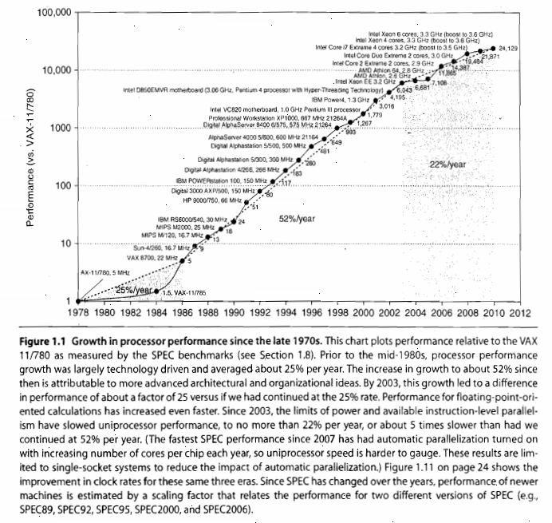

Instruction set architecture, microcode
Readings for Instruction Set Architectures, Microcodes
The readings for this lecture are H&P5 Chapter 1 (H&P4 Chapter 1), and H&P5 Appendix A (H&P4 Appendix B).
Book abbreviations:
- H&P5 = Computer Architecture: A Quantitative Approach (5th Edition), 2011
- H&P4 = Computer Architecture: A Quantitative Approach (4th Edition), 2007
- S&L = Modern Processor Design: Fundamentals of Superscalar Processors (1st Edition), 2005, reissued 2013.
Fundamentals of Quantitative Design and Analysis

This growth rate, combined with the cost advantages of a mass-produced microprocessor, led to an increasing fraction of the computer business being based on microprocessors.
Two significant changes in the computer marketplace
- The virtual elimination of assembly language programming reduced the need for object-code compatibility.
- The creation of standardized, vendor-independent operating systems, such as UNIX and its clone, Linux, lowered the cost and risk of brining out a new architecture.
The RISC-based machines focused on attention of designers on two critical performance techniques, the exploitation of instruction-level parallelism (initially through pipelining and later through multiple instruction issue) and the use of caches (initially in simple forms and later using more sophisticated organizations and optimizations).
The hardware renaissance led to the fourth impact, which is on software development. This 25,000-fold performance improvement since 1987 allowed programmers today to trade performance for productivity.
Alas also shows that this 17-year hardware renaissance is over. Since 2003, single-processor performance improvement has dropped to less than 22% per year due to the twin hurdles of maximum power dissipation of air-cooled chips and the lack of more instruction-level parallelism to exploit efficiently. Indeed, in 2004 Intel canceled its high-performance would be via multiple processors per chip rather than via faster uniprocessors.
Classes of computers

Servers
Different characteristics
- availability
- scalability
- designed for efficient throughput. That is, the overall performance of the server-in terms of transactions per minute or Web pages served per second-is what is crucial.

Clusters/warehouse-scale computers
Clusters are collections of desktop computers or servers connected by local area networks to act as a single larger computer. The largest of the clusters are called warehouse-scale computers (WSCs), in that they are designed so that tens of thousands of servers can act as one.
WSCs are related to servers, in that availability is critical. The difference from servers is that WSCs use redundant inexpensive components as the building blocks, relying on a software layer to catch and isolate the many failures that will happen with computing at this scale. Note that scalability for a WSC is handled by the local area network connecting the computers and not by integrated computer hardware, as in the case of servers.
Supercomputers are related to WSCs in that they are equally expensive, costing hundreds of millions of dollars, but supercomputers differ by emphasizing floating-point performance and by running large, communication-intensive batch programs that can run for weeks at a time. This tight coupling leads to use of much faster internal networks. In contrast, WSCs emphasize interactive applications, large-scale storage, dependability, and high Internet bandwidth.
Embedded computers
Other embedded devices are more limited in hardware and software sophistication.
Classes of parallelism and parallel architectures
Data-level parallelism (DLP) arises because there are many data items that can be operated on at the same time.
Task-level parallelism (TLP) arises because tasks of work are created that can operate independently and largely in parallel.
Computer hardware in turn can exploit these two kinds of application parallelism in four major ways:
- Instruction-level parallelism exploits data-level parallelism at modest levels with compiler help using ideas like pipelining and at medium levels using ideas like speculative execution.
- Vector architectures and graphic processor units (GPUs) exploit data-level parallelism by applying a single instruction to a collection of data in parallel.
- Thread-level parallelism exploits either data-level parallelism or task-level parallelism in a tightly coupled hardware model that allows for interaction among parallel threads.
- Request-level parallelism exploits parallelism among largely decoupled tasks specified by the programmer or the operating system.
There four ways for hardware to support the data-level parallelism and task-level parallelism go back 50 years. When Michael Flynn [1966] studied the parallel computing efforts in the 1960s, he found a simple classification whose abbreviations we still use today. He looked at the parallelism in the instruction and data streams called for by the instructions at the most constrained component of the multiprocessor, and placed all computers into one of four categories:
- Single instruction stream, single data stream (SISD) - This category is the uniprocessor. The programmer thinks of it as the standard sequential computer, but it can exploit instruction-level parallelism.
- Single instruction stream, multiple data streams (SIMD) - The same instruction is executed by multiple processors using different data streams. SIMD computers exploit data-level parallelism by applying the same operations to multiple items of data in parallel. Each processor has its own data memory (hence the MD of SIMD), but there is a single instruction memory and control processor, which fetches and dispatches instructions.
- Multiple instruction streams, single data stream (MISD) - No commercial multiprocessor of this type has been built to date, but it rounds out this simple classification.
- Multiple instruction streams, multiple data streams (MIMD) - Each processor fetches its own instructions and operates on its own data, and it targets task-level parallelism. In general, MIMD is more flexible than SIMD and thus more generally applicable, but it is inherently more expensive than SIMD.
Defining computer architecture
Determine what attributes are important for a new computer, then design a computer to maximize performance and energy efficiency while staying within cost, power, and availability constraints.
Instruction set architecture: the myopic view of computer architecture
The ISA serves as the boundary between the software and hardware.
Seven dimensions of an ISA:
- Class of ISA - Nearly all ISAs today are classified as general-purpose register architectures, where the operands are either registers or memory locations. The two popular versions of this class are register-memory ISAs, such as the 80x86, which can access memory as part of many instructions, and load-store ISAs, such as ARM and MIPS, which can access memory only with load or store instructions. All recent ISAs are load-store.
- Memory addressing - Virtually all desktop and server computers, including the 80x86, ARM, and MIPS, use byte addressing to access memory operands. Some architectures, like ARM and MIPS, require that objects must be aligned.
- Addressing modes - In addition to specifying registers and constant operands, addressing modes specify the address of a memory object.
- Types and sizes of operands - Like most ISAs, 80x86, ARM, and MIPS support operand sizes of 8-bit (ASCII character), 16-bit (Unicode character of half word), 32-bit (integer or word), 64-bit (double word or long integer), and IEEE 754 floating point in 32-bit (single precision) and 64-bit (double precision). The 80x86 also supports 80-bit floating point (extended double precision).
- Operations - The general categories of operations are data transfer, arithmetic logical, control, and floating point.
- Control flow instructions - Virtually all ISAs, including these three, support conditional branches, unconditional jumps, procedure calls, and returns. All three use PC-relative addressing, where the branch address is specified by an address field that is added to the PC.
- Encoding an ISA - There are two basic choices on encoding: fixed length and variable length.

The other challenges facing the computer architecture beyond ISA design are particularly acute at the present, when the differences among instruction sets are small and when there are distinct application areas.
Genuine computer architecture: designing the organization and hardware to meet goals and functional requirements
The implementation of a computer has two components: organization and hardware. The term organization includes the high-level aspects of a computer’s design, such as the memory system, the memory interconnect, and the design of the internal processor or CPU (central processing unit-where arithmetic, logic, branching, and data transfer are implemented). The term microarchitecture is also used instead of organization.
The switch to multiple processors per microprocessor led to the term core to also be used for processor. Instead of saying multiprocessor microprocessor, the term multicore has caught on.
The architecture overs all three aspects of computer design-instruction set architecture, organization or microarchitecture, and hardware.
Computer architecture must design a computer to meet functional requirements as well as price, power, performance, and availability goals.
Architects must also be aware of important trends in both the technology and the use of computers, as such trends affect not only the future cost but also the longevity of an architecture.
Trends in technology
Integrated circuit logic technology
Semiconductor DRAM (dynamic random-access memory) - Now that most DRAM chips are primarily shipped in DIMM modules, it is harder to track chip capacity, as DRAM manufacturers typically offer several capacity products at the same time to match DIMM capacity.
DIMM (dual in-line memory module) is a type of computer memory that is natively 64 bits, enabling fast data transfer. DIMM is a module that contains one or several random access memory (RAM) chips on a small circuit board with pins that connect it to the computer motherboard. The DIMM stores each data bit in a separate memory cell. DIMMs use a 64-bit data path, since processors used in personal computers have a 64-bit data width. DIMMs are typically used in desktop PCs, laptops, printers and other devices.
What is DIMM (dual in-line memory module)? - Definition from WhatIs.com
Semiconductor Flash (electrically erasable programmable read-only memory) - This nonvolitile semiconductor memory is the standard storage device in PMDs, and its rapidly increasing popularity has fueled its rapid growth rate in capacity.
Magnetic disk technology - Disks are 15 to 25 times cheaper per bit than Flash. Given the slowed growth rate of DRAM, disks are now 300 to 500 times cheaper per bit than DRAM. This technology is central to server and warehouse scale storage.
Network technology - Network performance depends both on the performance of switches and on the performance of the transmission system.
Performance trends: bandwidth over latency
Bandwidth or throughput is the total amount of work done in a given time, such as megabytes per second for a disk transfer. In contrast, latency or response time is the time between the start and the completion of an event, such as milliseconds for a disk access.

Clearly, bandwidth has outpaced latency across these technologies and will likely continue to do so.
Scaling of transistor performance and wires
Integrated circuit processes are characterized by the feature size, which is the minimum size of a transistor or a wire in either the x or y dimension.
The increase in transistor performance, however, is more complex. As feature sizes shrink, devices shrink quadratically in the horizontal dimension and also shrink in the vertical dimension. The shrink in the vertical dimension requires a reduction in operating voltage to maintain correct operation and reliability of the transistors. This combination of scaling factors leads to a complex interrelationship between transistor performance and process feature size. To a first approximation, transistor performance improves linearly with decreasing feature size.
Although transistors generally improve in performance with decreased feature size, wires in an integrated circuit do not. In particular, the signal delay for a wire increases in proportion to the product of its resistance and capacitance. Of course, as feature size shrink, wires get shorter, but the resistance and capacitance per unit length get worse. This relationship is complex, since both resistance and capacitance depend on detailed aspects of the process, the geometry of a wire, the loading on a wire, and even the adjacency to other structures.
In general, however, wire delay scales poorly compared to transistor performance, creating additional challenges for the designer.
Trends in power and energy in integrated circuits
Today, power is the biggest challenge facing the computer designer for nearly every class of computer. First, power must be brought in and distributed around the chip, and modern microprocessors use hundreds of pins and multiple interconnect layers just for power and ground. Second, power is dissipated as head and must be removed.
Power and energy: a systems perspective
What is the maximum power a processor ever requires? Meeting this demand can be important to ensuring correct operation. Modern processors can vary widely in power consumption with high peak currents; hence, they provide voltage indexing methods that allow the processor to slow down and regulate voltage within a wider margin. Obviously, doing so decreases performance.
What is the sustained power consumption? This metric is widely called the thermal design power (TDP), since it determines the cooling requirement. A typical power supply for a system is usually sized to exceed the TDP, and a cooling system is usually designed to match or exceed TDP. Failure to provide adequate cooling will allow the junction temperature in the processor to exceed its maximum value, resulting in device failure and possibly permanent damage. Modern processors provide two features to assist in managing heat, since the maximum power (and hence heat and temperature rise) can exceed the long-term average specified by the TDP. First, as the thermal temperature approaches the junction temperature limit, circuitry reduces the clock rate, thereby reducing power. Should this technique not be successful, a second thermal overload trip is activated to power down the chip.
The third factor that designers and users need to consider is energy and energy efficiency. In general, energy is always a better metric because it is tied to a specific task and the time required for that task. In particular, the energy to execute a workload is equal to the average power times the execution time for the workload.
When is power consumption a useful measure? The primary legitimate use is as a constraint.
Energy and power within a microprocessor
The energy required per transistor:
\[ Energy_{dynamic} \propto \text{Capacitive load} \times Voltage^{2} \]
The energy of a single transition:
\[ Energy_{dynamic} \propto 1/2 \times \text{Capacitive load} \times Voltage^{2} \]
The power required per transistor
\[ Power_{dynamic} \propto 1/2 \times \text{Capacitive load} \times Voltage^{2} \times \text{Frequency switched} \]
Clearly, dynamic power and energy are greatly reduced by lowering the voltage. The capacitive load is a function of the number of transistors connected to an output and the technology, which determines the capacitance of the wires and the transistors.
As we move from one process to the next, the increase in the number of transistors switching and the frequency with which they switch dominate the decrease in load capacitance and voltage, leading to an overall growth in power consumption and energy.
Given the equation above, you would expect clock frequency growth to slow down if we cannot reduce voltage or increase power per chip.

Power is now the major constraint to using transistor.
Many techniques to try to improve energy efficiency despite flat clock rates and constant supply volatge:
- Do nothing well
- Dynamic voltage-frequency scaling (DVFS) - Modern microprocessors typically offer a few clock frequencies and voltages in which to operate that use lower power and energy.
- Design for typical case - The “emergency slowdown” allows manufacturers to design for a more typical case and then rely on this safety mechanism (ex. low power mode) if someone really does run programs that consume much more power than is typical.
- Overclocking - For single threaded code, these microprocessors can turn off all cores but one and run it at an even higher clock rate.
Static power is becoming an important issue because leakage current flows even when a transistor is off:
\[ Power_{static} \propto Current_{static} \times Voltage \]
Increasing the number of transistors increases power even if they are idle, and leakage current increases in processors with smaller transistor sizes. As a result, very low power systems are even turning off the power supply (power gating) to inactive modules to control loss due to leakage.
Finally, because the processor is just a portion of the whole energy cost of a system, it can make sense to use a faster, less energy-efficient processor to allow the rest of the system to go into a sleep mode. This strategy is known as race-to-halt.
The importance of power and energy has increased the scrutiny on the efficiency of an innovation, so the primary evaluation now is tasks per joule or performance per watt as opposed to performance per \(mm^{2}\) of silicon.
Trends in cost
The impact of time, volume, and commoditization
The cost of a manufactured computer component decreases over time even without major improvements in the basic implementation technology. The underlying principle that drives costs down is the learning curve-manufacturing costs decrease over time. The learning curve itself is best measured by change in yield-the percentage of manufactured devices that survives the testing procedure. Whether it is a chip, a board, or a system, designs that have twice the yield will have half the cost.
Volume is a second key factor in determining cost. Increasing volumes affect cost in several ways. First, they decrease the time needed to get down the learning curve, which is partly proportional to the number of systems (or chips) manufactured. Second, volume decreases cost, since it increases purchasing and manufacturing efficiency.
Commodities are products that are sold by multiple vendors in large volumes and are essentially identical.
Cost of an integrated circuit
In an increasingly competitive computer market place where standard parts-disks, flash memory, DRAMs, and so on-are becoming a significant portion of any system’s costs, integrated circuit costs are becoming a greater portion of the cost that varies between computers, especially in the high-volume, cost-sensitive portion of the market. Indeed, with personal mobile devices’ increasing reliance of whole systems on a chip (SOC), the cost of the integrated circuits it much of the cost of the PMD. Thus, computer designers must understand the costs of chips to understand the costs of current computer.
Although the costs of integrated circuits have dropped exponentially, the basic process of silicon manufacture is unchanged: A wafer is still tested and chopped into dies that are packaged.
\[ \text{Cost of integrated circuit} = \frac{\text{Cost of die} + \text{Cost of testing die} + \text{Cost of packaging and final test}}{\text{Final test yield}} \]
\[ \text{Cost of die} = \frac{\text{Cost of wafer}}{\text{Dies per wafer} \times \text{Die yield}} \]
The number of dies per wafer is approximately the area of the wafer divided by the area of the die. It can be more accurately estimated by
\[ \text{Dies per wafer} = \frac{\pi \times (\text{Wafer diameter} / 2)^{2}}{\text{Die area}} - \frac{\pi \times \text{Wafer diameter}}{\sqrt{2 \times \text{Die area}}} \]
\[ \text{Die yield} = \text{Wafer yield} \times 1 / (1 + \text{Defects per unit area} \times \text{Die area})^{N} \]
What should a computer designer remember about chip costs? The manufacturing process dictates the wafer cost, wafer yield, and defects per unit area, so the sole control of the designer is die area. In practice, because the number of defects per unit area is small, the number of good dies per wafer, and hence the cost per die, grows roughly as the square of the die area. The computer designer affects die size, and hence cost, both by what functions are included on or excluded from the die and by the number of I/O pins.
Before we have a part that is ready for use in a computer, the die must be tested (to separate the good dies from the bad), packaged, and tested again after packaging. These steps all add significant costs.
The above analysis has focused on the variable costs of producing a functional die, which is appropriate for high-volume integrated circuits. There is, however, one very important part of the fixed costs that can significantly affect the cost of an integrated circuit for low volumes (less than 1 million parts), namely, the cost of a mask set. Each step in the integrated circuit process requires a separate mask. Thus, for modern high-density fabrication processes with four to six metal layers, mask costs exceed $1M. Obviously, this large fixed cost affects the cost of prototyping and debugging runs and, for small-volume production, can be a significant part of the production cost. Since mask costs are likely to continue to increase, designers may incorporate reconfigurable logic to enhance the flexibility of a part or choose to use gate arrays (which have fewer custom mask levels) and thus reduce the cost implications of masks.
Cost of manufacturing versus cost of operation
The amortized purchase price of servers and networks is just over 60% of the monthly cost to operate a warehouse-scale computer, assuming a short lifetime of the IT equipment of 3 to 4 years. About 30% of the monthly operational costs are for power use and the amortized infrastructure to distribute power and to cool the IT equipment, despite this infrastructure being amortized over 10 years. Thus, to lower operational costs in a warehouse-scale computer, computer architects need to use energy efficiently.
Dependability
Historically, integrated circuits were one of the most reliable components of a computer. Although their pins many be vulnerable, and faults may occur over communication channels, the error rate inside the chip was very low. That conventional wisdom is changing as we head to feature sizes of 32nm and smaller, as both transient faults and permanent faults will become more commonplace, so architects must design systems to cope with these challenges.
Computers are designed and constructed at different layers of abstraction. Thus, utter failure of a module at one level may be considered merely a component error in a higher-level module. This distinction is helpful in trying to find ways to build dependable computers.
One difficult question is deciding when a system is operating properly. This philosophical point became concrete with the popularity of Internet services. Infrastructure providers started offering service level agreements (SLAs) or service level objectives (SLOs) to guarantee that their networking or power service would be dependable.
Systems alternate between two states of service with respect to an SLA:
- Service accomplishment, where the service is delivered as specified.
- Service interruption, where the delivered service is different from the SAL.
Transitions between two states are caused by failures (from state 1 to state 2) or restorations (2 to 1). Quantifying these transitions leads to the two main measures of dependability.
- Module reliability is a measure of the continuous service accomplishment (or, equivalently, of the time to failure) from a reference initial instant. Hence, the mean time of failure (MTTF) is a reliability measure. The reciprocal of MTTF is a rate of failures, generally reported as failures per billion hours of operation, or FIT (for failures in time). Service interruption is measured as mean time to repair (MTTR). Mean time between failures (MTBF) is simply the sum of MTTF + MTTR. Although MTBF is widely used, MTTF is often the more appropriate term. If a collection of modules has exponentially distributed lifetimes-meaning that the age of a module is not important in probability of failure-the overall failure rate of the collection is the sum of the failure rates of the modules.
- Module availability is a measure of the service accomplishment with respect to the alternation between the two states of accomplishment and interruption.
\[ \text{Module availability} = \frac{MTTF}{(MTTF + MTTR)} \]
Note that reliability and availability are now quantifiable metrics, rather than synonyms for dependability. From these definitions, we can estimate reliability of a system quantitatively if we make some assumptions about the reliability of components and that failures are independent.
The primary way to cope with failure is redundancy, either in time (repeat the operation to see if it still erroneous) or in resources (have other components to take over from the one that failed). Once the component is replaced and the system fully repaired, the dependability of the system is assumed to be as good as new.
Measuring, reporting, and summarizing performance
X is n times faster than Y.
\[ n = \frac{\text{Execution time}_{Y}}{\text{Execution time}_{X}} = \frac{\frac{1}{Performance_{Y}}}{\frac{1}{Performance_{X}}} = \frac{Performance_{X}}{Performance_{Y}} \]
Unfortunately, time is not always the metric quoted in comparing the performance of computers. Our position is that the only consistent and reliable measure of performance is the execution time of real programs, and that all proposed alternatives to time as the metric or to real programs as the items measured have eventually led to misleading claims or even mistakes in computer design.
Even execution time can be defined in different ways depending on what we count.
Benchmarks
The best choice of benchmarks to measure performance is real application.
- Kernels, which are small, key pieces of real applications.
- Toy programs, which are 100-line programs from beginning programming assignments, such as quicksort.
- Synthetic benchmarks, which are fake programs invented to try to match the profile and behavior of real applications, such as Dhrystone.
Another issue is the conditions under which the benchmarks are run.
Desktop benchmarks divides into two broad classes: processor-intensive benchmarks and graphics-intensive benchmarks, although many graphics benchmarks include intensive processor activity.
Just as servers have multiple functions, so are there multiple types of benchmarks. The simplest benchmark is perhaps a processor throughput-oriented-benchmark.
Other than SPEC rate, most server applications and benchmarks have significant I/O activity arising from either disk or network traffic, including benchmarks for file server systems, for Web servers, and for database and transaction-processing systems.
Transaction-processing (TP) benchmarks measure the ability of a system to handle transactions that consist of database accesses and updates.
Reporting performance results
The guiding principle of reporting performance measurements should be reproducibility-list everything another experimenter would need to duplicate the results. These reports are excellent sources for finding the real costs of computing systems, since manufacturers compete on high performance and cost-performance.
Quantitative principles of computer design
Take advantage of parallelism
Taking advantage of parallelism is one of the most important methods for improving performance.
Our first example is the use of parallelism at the system level. The workload of handling requests can be spread among the processors and disks, resulting in improved throughput. Being able to expand memory and the number of processors and disks is called scalability, and it is a valuable asset for servers. Spreading of data across many disks for parallel reads and writes enables data-level parallelism.
At the level of an individual processor, taking advantage of parallelism among instructions is critical to achieving high performance. The basic idea behind pipelining is to overlap instruction execution to reduce the total time to complete an instruction sequence. A key insight that allows pipelining to work is that not every instruction depends on its immediate predecessor, so executing the instructions completely or partially in parallel may be possible. Pipelining is the best-known example of instruction-level parallelism.
Parallelism can also be exploited at the level of detailed digital design.
Principle of locality
Important fundamental observations have come from properties of programs. The most important program property that we regularly exploit is the principle of locality: Programs tend to reuse data and instructions they have used recently.
Two different types of locality have been observed. Temporal locality states that recently accessed items are likely to be accessed in the near future. Spatial locality says that items whose addresses are near one another tend to be referenced close together in time.
Focus on the common case
Perhaps the most important and pervasive principle of computer design is to focus on the common case: In making a design trade-off, favor the infrequent case over the infrequent case. This principle applies when determining how to spend resources, since the impact of the improvement is higher if the occurrence is frequent.
Focusing on the common case works for power as well as for resource allocation and performance.
The frequent case is often simpler and can be done faster than the infrequent case. This emphasis may slow down the case when overflow occurs, but if that is rate then overall performance will be improved by optimizing for the normal case.
A fundamental law, called Amdahl’s law, can be used to quantify this principle.
Amdahl’s law
Amdahl’s law sates that the performance improvement to be gained from using some faster mode of execution is limited by the fraction of the time the faster mode can be used.
\[ Speedup = \frac{\text{Performance for entire task using the enhancement when possible}}{\text{Performance for entire task without using the enhancement}} = \frac{\text{Execution time for entire task without using the enhancement}}{\text{Execution time for entire task using the enhancement when possible}} \]
Speedup tells us how much faster a task will run using the computer with the enhancement as opposed to the original computer.
Amdahl’s law gives us a quick way to find the speedup from some enhancement, which depends on two factors:
- The fraction of the computation time in the original computer that can be converted to take advantage of the enhancement.
- The improvement gained by the enhanced execution mode, that is, how much faster the task would run if the enhanced mode were used for the entire program-this value is the time of the original mode over the time of the enhanced mode. If the enhanced mode takes, asy, 2 seconds for a portion of the program, while it is 5 seconds in the original mode, the improvement is 5/2. We will call this value, which is always greater than 1, \(Speedup_{enhanced}\).
\[ \text{Execution time}_{new} = \text{Execution time}_{old} \times ((1 - Fraction_{enhanced}) + \frac{Fraction_{enhanced}}{Speedup_{enhanced}}) \]
\[ Speedup_{overall} = \frac{\text{Execution time}_{old}}{\text{Execution time}_{new}} \]
We needed the fraction consumed by the new and improved version: often it is difficult to measure these times directly.
The processor performance equation
\[ \text{CPU time} = \frac{\text{CPU clock cycles for a program}}{\text{Clock rate}} \]
\[ CPI = \frac{\text{CPU clock cycles for a program}}{\text{Instruction count}} \]
\[ \text{CPU time} = \text{Instruction count} \times \text{Cycles per instruction} \times \text{Clock cycle time} \]
\[ \frac{Instructions}{Program} \times \frac{Clock cycles}{Instruction} \times \frac{Seconds}{Clock cycle} = \frac{Seconds}{Program} = \text{CPU time} \]
As this formula demonstrates, processor performance is dependent upon three characteristics: clock cycle (or rate), clock cycles per instruction, and instruction count. Furthermore, CPU time is equally dependent on these three characteristics.
Unfortunately, it is difficult to change one parameter in complete isolation from others because the basic technologies involved in changing each characteristic are interdependent.
- Clock cycle time-Hardware technology and organization
- CPI-Organization and instruction set architecture
- Instruction count-Instruction set architecture and compiler technology
Fallacies and pitfalls
Fallacy: Multiprocessors are a silver bullet
Multiple processors per chip do not guarantee lower power; it’s certainly possible to design a multicore chip that uses more power.
Pitfall: Falling prey to Amdahl’s heartbreaking law
Only when the overall speedup is disappointing do we recall that we should have measured first before we spent so much effort enhancing it.
Pitfall: A single point of failure
No matter how much more dependable we make the power supplies, as we did in our example, the single fan will limit the reliability of the disk subsystem.
Fallacy: Hardware enhancements that increase performance improve energy efficiency or are at worst energy neutral
Fallacy: Benchmarks remain valid indefinitely
Several factors influence the usefulness of a benchmark as a predictor of real performance, and some change over time. A big factor influencing the usefulness of a benchmark is its ability to resist “benchmark engineering” or “benchmarketing.” Once a benchmark becomes standardized and popular, there is tremendous pressure to improve performance by targeted optimizations or by aggressive interpretation of the rules for running the benchmark.
Fallacy: The rated mean time to failure of disks is 1,200,000 hours of almost 140 years, so disks practically never fail.
0.9% would fail per year, or 4.4% over a 5-year lifetime.
Moreover, those high numbers are quoted assuming limited ranges of temperature and vibration, if they are exceeded, then all bets are off.
Fallacy: Peak performance tracks observed performance.
The only university true definition of peak performance is “the performance level a computer is guaranteed not to exceed.” It varies from 5% to 58%. Since the gap is so large and can vary significantly by benchmark peak performance is not generally useful in predicting observed performance.
Pitfall: Fault detection can lower availability
This apparently ironic pitfall is because computer hardware has a fair amount of state that may not always be critical to proper operation.
In processors that try to aggressively exploit instruction-level parallelism, not all the operations are needed for correct execution of the program.
The pitfall is in detecting faults without providing a mechanism to correct them. These engineers are unlikely to design another computer without ECC on external caches.
Concluding remarks
Hardware-software cooperation has become a key to high-performance memory systems, just as it has to high-performance pipelines.
We look at instruction-level parallelism (ILP), of which pipelining is the simplest and most common form. Exploiting ILP is one of the most important techniques for building high-speed uniprocessors.
The classic and oldest approach is vector architecture, and we start there to lay down the principles of SIMD design. The SIMD instruction set extensions found in most desktop microprocessors today. The third piece is an in-depth explanation of how modern graphics processing units (GPUs) works. Most GPU descriptions are written from the programmer’s perspective, which usually hides how the computer really works.
Instead of using parallelism to overlap individual instructions, multiprocessing uses parallelism to allow multiple instruction streams to be executed simultaneously on different processors. Our focus is on the dominant form of multiprocessors, shared-memory multiprocessors, though we introduce other types as well and discuss the broad issues that arise in any multiprocessor.
We introduce clusters and then go into depth on warehouse-scale computers (WSCs), which computer architects help design. The concerns of price-performance and energy efficiency of the earlier chapters applies to WSCs, as does the quantitative approach to making decisions.
What is computer architecture?

In its broadest definition, computer architecture is the design of the abstraction/implementation layers that allow us to execute information processing applications efficiently using manufacturing technologies.
Abstractions in modern computing systems


Computer architecture is constantly changing

Computers then…

Computers now


Sequential processor performance


Course structure

Course content computer organization


Architecture vs. microarchitecture

Software developments


Compatibility problem at IBM

IBM 360: Design premises

IBM 360: A general-purpose register (GPR) machine

IBM 360: initial implementations

IBM 360: 47 years later… The zSeries z11 microprocessor

Same architecture different microarchitecture

Different architecture different microarchitecture

Where do operands come from and where do results go?


Stack-based instruction set architecture (ISA)

Evaluation of expressions


Hardware organization of the stack

Stack operations and implicit memory references

Stack size and memory references


Machine model summary

Classes of instructions

REP MOVSB - store and copy
Addressing modes: how to get operands from memory

Data types and sizes

ISA encoding

x86 (IA-32) instruction encoding

MIPS64 instruction encoding

Real world instruction sets

Why the diversity in ISAs?

Recap